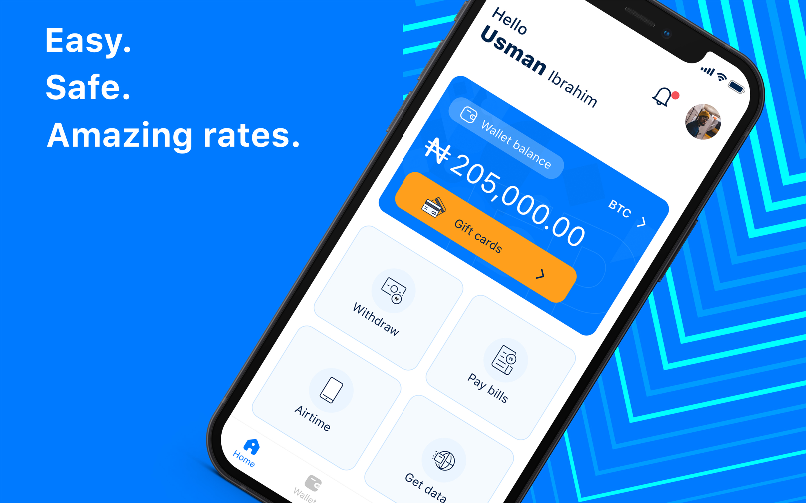

Hello, there!
I‚Äôm certain you came here wondering what is so great about me, and what I do üôÇ.
I am Michael Shumaker a passionate multidisciplinary UI / UX designer with dyslexia, but most of all I am interested in the process, outcomes and the behavioural changes the solutions I create have in both users, stakeholders and how it affects their lives.
Scroll down

What I have been up to
UI / UX
Building confidence in a brand and reducing churn.
How I reduced churn and bounce rate on the mobile app, by redesigning the mobile app user interface .
UI / UX
Making a betting website more user friendly
Reducing the churn rate for a betting website.
Latest feedback
Novugrid
Technology agency
We have worked with Michael on several projects, and we have been impressed by his creative execution on them, attention to detail, and impeccable user experiences, his delivery time is also very impressive, communicating with him is seamless. we would keep working with him in future.
Stephen dada
C.E.O, Flippay
Working with Michael was a very good decision, the experience was smooth, communicating with him was very easy, he also gave my team and I a huge boost in confidence, even after handing off the project, he was still there to check on with the developers, the rest of the team, he also helped.
About me
“Everything is figure-out-able”
I live by this quote, it has built me into a competent problem solving human, it means that no matter how difficult a situation is, I would always find a way out.
My name is Michael Shumaker, you can also call me satoshi 16px. I am a multi-disciplinary UI/UX designer, I have been solving design problems for the past 7 years, solving web and mobile problems for over a year.
As a UI/UX designer the impact of a product on the product owner and the users is very important to me Empathy, Testing, iterations, simplicity, and asking why are always involved in my design process.
Being a designer with dyslexia is a struggle and as much as I struggle, it has helped me be more patient, empathetic, extremely meticulous in the details, have a minimalist approach in UI design and big on accessability.
I do however enjoy, researching, unconventional conversations, extreme sports, animes, cooking, and working without music.
Let's work together
Shoot me a message